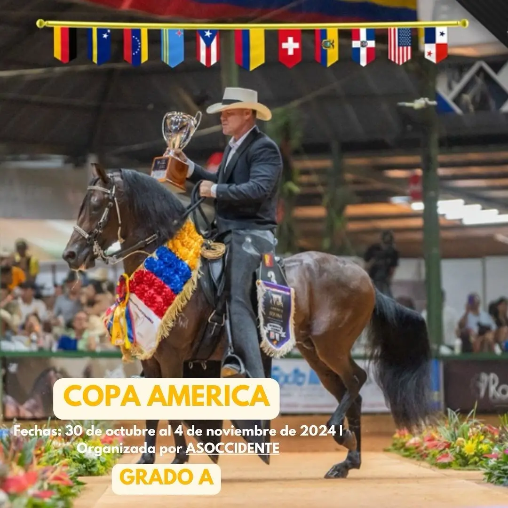

Caballos paso fino Colombiano

HISTORIA
El paso obligado para llegar a la historia del paso fino Colombiano es inspeccionar el origen de la raza paso fino. Esta raza tiene su origen en España en la edad media. Tras la invasión de los árabes a la península, llevaron caballos tipo barbas. Al haber hecho el cruce de razas, este caballo árabe le dio un impacto muy significativo a la evolución de los caballos no solo en Europa sino también en el norte de África y en el nuevo mundo. Con el aporte de los caballos andaluces ya existentes en ese tiempo, tuvo como consecuencias una mezcla de razas única. Además de que el caballo barbas se mezclara con caballos ya existentes y esto permitió que naciera el berberisco español.

Cuando Cristóbal Colón llegó por segunda vez a Santo Domingo, lo que hoy se conoce como República Dominicana, trajo consigo los primeros caballos al nuevo mundo. Esos animales eran Andaluces, Berberiscos de España y descendientes de Barbas. Cuando estos caballos llegaron a México y a América del sur, otras razas locales se juntaron con los caballos traídos de España y esto desencadenó que se les reconozca como los reales antepasados de la raza paso fino.
A lo largo de los siglos, los caballos han tenido diferentes utilidades, como animales de transporte, de carga hasta que en el siglo XVIII fue usado en diferentes fiestas patronales, principalmente en Perú, México y Colombia. Ya en el siglo XIX el caballo era usado en competencias como en danzas, carreras de escape, andadura y sobre todo, de paso fino.

En esa época les tocaba recorrer grandes distancias, de norte a sur y de oriente a occidente del territorio nacional. Entonces criaban los caballos para ese objetivo. Es en Colombia donde en verdad se presenta una verdadera gesta de desarrollo, teniendo dos epicentros de desarrollo claramente determinados: El primer centro es en la sabana de Bogotá con sus valles de Sogamoso, Ubaté, Chiquinquirá. Y el otro centro es en Urabá y el suroeste antioqueño, donde da origen al Caballo del suroeste antioqueño. 2 condiciones geográficas muy diferentes: Mientras en Bogotá habían terrenos muy pantanosos y en Antioquia se presenta una zona muy montañosa y agreste.

En la década de los 50's, predominaban mucho los movimientos de los caballos berberiscos en el caballo de paso fino Colombiano. Este andar sólo se hacía en 4 tiempos permitiendo movimientos suaves y mucho más fuertes en la parte posterior lo que llevaba a que estos movimientos fueran un tanto toscos.
Por fortuna, el caballo de paso fino colombiano fue alcanzando una evolución satisfactoria que a ciencia cierta hoy todavía es discutida sus razones. Algunos criaderos sostienen que es por factores genéticos y otros otorgan esta evolución a la topografía del terreno en Colombia y al manejo que se le dio a los animales en el país. Lo que no se pone en duda, es el aporte que los jinetes colombianos le dieron al caballo, ya que estos le imprimieron armonía y mucho mando en un sentido musical y de simetría auditiva. Esto permitió que el caballo colombiano trabajara en 8 tiempos.

Copa América 2024
No podemos olvidar tampoco el brío de sus antepasados, ya que esto le permite gozar a los caballos de paso fino colombianos de una chispa y una espontaneidad que le permite estar atento a cualquier orden o provocación que el jinete hace por medio de las riendas o de sus piernas. Por esta facilidad, el caballo colombiano es bastante dócil a la hora de ser entrenado. Y para que el caballo esté bien entrenado el jinete y sus adiestradores deben cumplir varias condiciones fundamentales: Fuerza en las piernas para exigirle al caballo mucha energía y rapidez, delicadeza y arte en las manos para dar las órdenes indicadas, y oído muy agudo para analizar que estas condiciones se cumplan.
Para más información acerca del caballo criollo colombiano, podemos ingresar al siguiente link Fedequinas.org obtendremos mayor información a la leída en este artículo
Los calendarios de las exposiciones equinas las podemos seguir en eventos nacionales que nos brindará toda la información que necesitamos respecto a las presentaciones que se organizarán en varias ciudades del país en ese mismo año
Gracias a esto el caballo de paso fino Colombiano ha logrado alcanzar un reconocimiento a nivel internacional que lo han convertido en referente por todas sus características:
- ELASTICIDAD
- SUAVIDAD
- BUEN RITMO
- EXACTITUD DE MOVIMIENTOS
- CADENCIA
- TRANQUILIDAD
- ELEGANCIA EN SU TROTE
Al final de esta pagina despues del recuadro, encontrarás un formulario inscripción para que estés actualizado con las noticias más recientes del mundo equino en nuestro país.
Andares |
Video descriptivo |
|---|---|
P1,P2, P3 y P4 |
|
Énfasis en P4 |